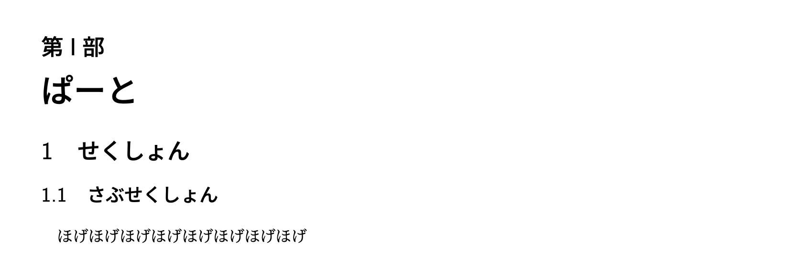
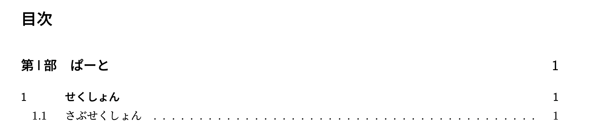

Macの場合
Windowsの場合
次に目次を作成する方法を紹介します。章立て・目次を作ると長い文書になったときの利便性が増すので積極的に使っていきましょう！
TeX 文書では章立てを作ることができます。
\part{ぱーと}
% \chapter{ちゃぷたー}
\section{せくしょん}
\subsection{さぶせくしょん}
ほげほげほげほげほげほげほげほげ

コード例のように ltjsarticle クラスでは \part, \section, \subsection を使うことができます。
また、このような章区切りの後は必ずインデント(字下げ)が発生するので、インデントを除く場合はその箇所に \noindent を入れます。
コード例の2行目でコメントアウト(行の頭に % をつけることでその行を無視するよう指示する)しているように、 ltjsarticle では \chapter を使うことができません。使いたい場合にはクラスを変えて \documentclass{ltjsreport} などとする必要がありますが、それに付随していくつかの機能やデフォルト値が変わってしまいます。
次のように * をつけることで、番号を消すことができます。
\section*{はじめに}
ほげほげと言えば何でも解決できる
番号を消した場合、次に紹介する目次には自動で追加されません。追加するためには次のコードのようにする必要があります。 必要に応じて chapter の部分を section や subsection に変えて使います。
\chapter*{Introduction}
\addcontentsline{toc}{chapter}{Introduction}
目次は、次のようにすることで簡単に作ることができます。
\tableofcontents

もし目次だけのページを作りたい場合は、\clearpage とすればその時点で改ページが行われます。
目次については、「 tex ファイルを読み込んで toc ファイルを作成」→「 toc ファイルを読み込んで目次に反映」という 手順を踏むので 1回のコンパイルで目次が出力されない場合があります。その場合はもう 1回コンパイルすれば出力されるはずです。
論文やレポートでよく使うようなタイトルの作り方を紹介しておきます。
\title{シケタイのためのTeXゼミ}
\author{ますれー}
\date{2022年9月1日}
\begin{document}
\maketitle
吾輩は猫である。...
\title ,\author ,\date は必ずプリアンブルに記述して、 \begin{document} の後に \maketitle を 書いて出力します。\author ,\date は省略が可能です。
また、クラス指定の部分を \documentclass[titlepage]{ltjsarticle} とすれば 1ページ目をタイトルのみに することができます。